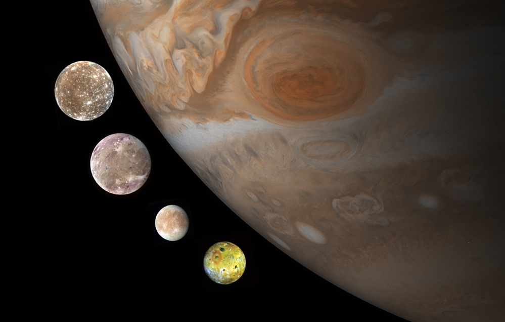

Jupiter's Moons
A moon, like our own, is a natural object that orbits a planet. While we only have one, Jupiter has 79! Some of them are very large and spherical (like our moon) while others are much smaller and irregular shapes.
The four largest of Jupiter’s moons were discovered by Galileo in 1609, although there is evidence of Chinese astronomer Gan De noticing one as early as 364 BC. Despite Gan De’s observations, all four are now known as the Galilean moons. The Galileo spacecraft looked closely at Jupiter and its main moons and was able to take images of their surfaces. New discoveries of moons have been made as recently as 2018, when an additional 10 were added to the list!
The four Galilean moons are Io, Europa, Ganymede, and Callisto. Like all of the major moons in the solar system their names are taken from Greek mythology whereas planets are named after Roman gods. These four main moons are huge, with Ganymede having a larger diameter than the planet Mercury! Each moon has a different composition and different clues to its history. 
Ganymede is the largest of Jupiter's moons with a diameter of 5,268 km. Its is mostly made up of a thick shell of ice and rock surrounding a liquid iron core. It is the only moon with a magnetic field and this causes it to have auroras at its poles like the northern and southern lights here on Earth. These are streams of charged particles which glow. Much of Ganymede's surface is covered with impact craters but there are also large ridges which hint that some tectonic movement occurred in its past.
Callisto is Jupiter's second largest moon. Like Ganymede its surface is mostly made of ice and rock but it is thought to have an underground ocean which may be able to harbor life. The surface of Callisto is the most heavily cratered seen so far in the Solar System. This means that it does not have any volcanoes or tectonic action which would irradicate the craters.
Io is the next largest of Jupiter's moons but is the most dense of all of them. Its it the closet moon to Jupiter. Io has over 400 active volcanoes and is very geologically active. Its volcanoes have been observed using both visible light and infrared telescopes. Tall fountains of sulfur and sulfur dioxide (up to 500km) have be seen to erupt covering its surface with large lava lakes and filling in any impact craters.
Europa is the smallest Galilean moon and is mostly made of rock with an ice-water crust. It has a very smooth icy surface with long cracks and a liquid ocean existing just below. Water plumes have been seen to erupt from its surface and it also holds a very thin Oxygen atmosphere. For these reason Europa is thought to be one of the most likely Solar System objects (other than Earth) to be able to support life.
Other moons: Some moons orbit around Jupiter in the same direction as Jupiter rotates (called prograde) and some orbit in reverse (called retrograde). How quickly they orbit Jupiter depends on how far away they are. A balance of gravitational forces means that only some orbits are stable. But scientists are still finding more moons even today.
Closer in than Io are more moons and also the rings of Jupiter which are made mostly of dust. Some moons (like Metis) have cleared their own path through the rings. These features are most clearly seen by infrared telescopes since they are too dim in the visible part of the spectrum.
Ooh pretty, I want to look at these!
Hmmm...let me see the other options